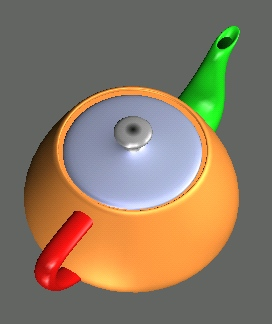

 BezierView (short bview) is a light weight viewer that renders Bezier patches, rational bezier patches and polygonal meshes. It provides a simple tool to analyse surfaces based on curvature plots, curvature needle plots, and highlight line plots. Currently, the WebGL version is recommended but also binaries and source coode are available.
teapot.bv
teapot2.bv
tpt_grp.bv
cube.bv
closedcone.bv
hand.bv
tetra.bv
tp_poly.bv
tpt_grp.bv
tridat.cube
plm.icosa.260
plm.tw.700
plm.oct.100
cubeg2.bv
twg2.bv
A .bv file consists of segments. Each segment has a patch header followed by the patch data. The header starts with the
essentially .obj format
1 Vnum Fnum v0x v0y v0z v1x v1y v1z .. v(n-1)x v(n-1)y v(n-1)z 3 f1v1 f1v2 f1v3 (OR: 4 f1v1 f1v2 f1v3 f1v4) ... 3 fmv1 fmv2 fmv3 (vertices are indeexed 0..n-1, not 1..n])Note: User can use obj2bv to convert .obj into .bv file.
header one of:
5 deg_u deg_v
Group 1 deg2x3 5 2 3 -1.5 1.0 0.0 -0.5 1.0 0.0 0.5 1.0 0.0 1.5 1.0 0.0 -1.5 0.0 0.0 -0.5 0.0 0.5 0.5 0.0 0.5 1.5 0.0 0.0 -1.5 -1.0 0.0 -0.5 -1.0 0.0 0.5 -1.0 0.0 1.5 -1.0 0.0
4 deg
Group 0 Bi-3 5 3 3 -1.5 1.5 0.0 -0.5 1.5 0.0 0.5 1.5 0.0 1.5 1.5 0.0 -1.5 0.5 0.0 -0.5 0.5 0.5 0.5 0.5 0.5 1.5 0.5 0.0 -1.5 -0.5 0.0 -0.5 -0.5 0.5 0.5 -0.5 0.5 1.5 -0.5 0.0 -1.5 -1.5 0.0 -0.5 -1.5 0.0 0.5 -1.5 0.0 1.5 -1.5 0.0
8 deg_u deg_v
The patch data are x y z values of the control points in row-major order. If rows= deg_u+1 =du1 and columns= deg_v+1 = dv1:
p(1,1) p(1,2) .... p(1,dv1)
p(2,1) p(2,2) .... p(2,dv1)
.. .. .... ..
p(du1,1) p(du1,2) .. p(du1,dv1)
and p has coordinates x,y,z thenx(1,1) y(1,1) z(1,1) x(1,2) y(1,2) z(1,2) : x(du1,dv1) y(du1,dv1) z(du1,dv1)For example a tensor-product patch of degree 1 by 2 has the header
5 1 2 -1 -1 0 0 -1 0 1 -1 0 -1 1 0 0 1 0 1 1 0
header:
3 deg
followed by (deg+2)*(deg+1)/2 control points with row-ascending ordering. For a cubic patch
9
7 8
4 5 6
0 1 2 3
the coordinates x,y,z of the patch data are
x(0) y(0) z(0) x(1) y(1) z(1) : x(9) y(9) z(9)
header:
9 deg Ndeg
control points as 3-sided patch followed by normals as 3-sided patch.
header:
10 degu degv Ndegu Ndegv
then the control points; then the normals arranged at the same order
Copyright (C) 2015 SurfLab, University of Florida.
This program is free for educational/research purpose. You will need to gain permissions from authors before you can use this program or any part of the source code for commercial usage.
This program is distributed in the hope that it will be useful, but WITHOUT ANY WARRANTY.
Author(s):